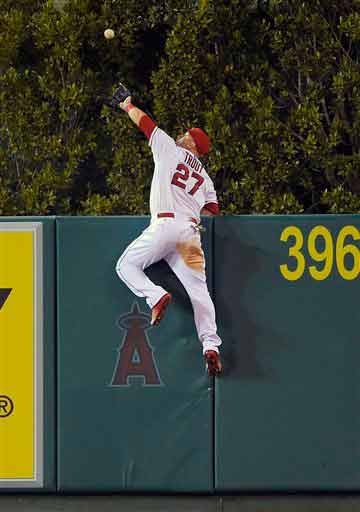
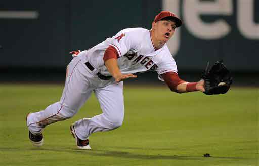
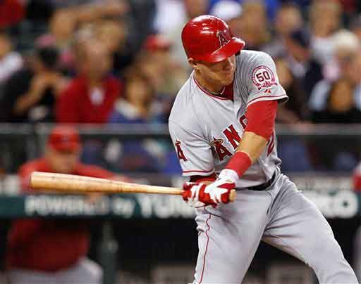
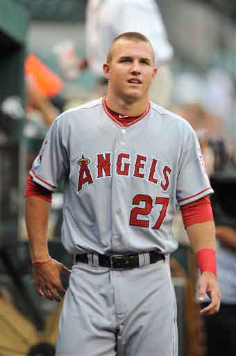
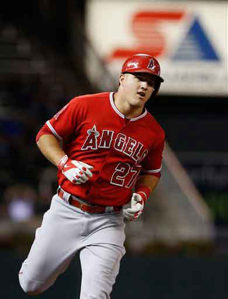

Mike Trout
Mike trout was born August 7, 1991. He was a first round pick by the Angels in the 2009 draft. He made a brief major leage experience in 2011 to be a backup for an injured center feilder. He became a everyday player the next season in 2012. Trout had his first career 4 hit game on june 4 and his second just 15 days later on June 19 th. He became the first Rookie in the American League to cross home plate in 14 consecuttive games. He also became the first rookie since Ichiro Suzuki to win rookie of the month four times during a single season. At age 20 Mike trout became the yougest player to hit at least 20 homeruns and steal at least 40 bases in a season. He also won the rookie of the year award in 2012.
IN 2013 started the season in left feild and had rough start to the season. In his 248th career game he scored his 200th career run becoming the fastest player to reach that feat since ted williams (225 games) in 1940. Trout finished the year with another great season and finished second in the AL MVP voting losing to Miguel Cabrerra.
Trout started off the season by signing a 6 year 144 million dollar contract extention with the Angels. He made the AllStar team for the 3rd year in a row. He won the All Star Game MVP award making him the second youngest player ever to when the award behind Ken Griffey Jr. IN 157 games in 2014 Trout Batted.287 with 36 home runs 39 doubles nine triples 111 RBI and 16 stolen bases. He was named AL MVP making him the fifth youngest MVP.
 